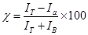
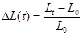

International Journal of Theoretical and Applied Nanotechnology (IJTAN)
ISSN: 1929-1248

Volume 1, Issue 2, Year 2013 - Pages 1-16
DOI: 10.11159/ijtan.2013.001
Physical Phenomena Facilitating the Penetration of Solutions of TiO2 Nanoparticles through Protective Gloves
Ludwig Vinches¹, Jessy de Santa Barbara¹, Stéphane Hallé¹, Patricia Dolez², Kevin J. Wilkinson³
¹École de Technologie Supérieure, 1100 Notre-Dame Ouest, Montréal QC H3C 1K3 Canada
ludwig.vinches@mail.mcgill.ca
²CTT Group, 3000 rue Boullé, Saint-Hyacinthe QC J2S 1H9 Canada
³Dept. De chimie, Université de Montréal, C.P. 6128, succ. Centre-ville, Montréal QC H3C 3J7 Canada
Abstract - Titanium dioxide nanoparticles (nTiO2) are found in numerous manufactured products such as sunscreens and paints. Nevertheless, some studies have expressed concern about their likely harmful effects on health. Application of the precautionary principle has led to the recommendation for the use of protective gloves by numerous Health & Safety agencies. However, recent work has shown that solutions of nTiO2 can penetrate the protective materials of gloves under conditions simulating occupational use.This study has been designed to identify some of the physical phenomena that may facilitate the penetration of nTiO2 through elastomer membranes subjected to mechanical deformations (such as those produced by flexing the hand).Nitrile rubber and latex gloves were brought into contact with two solutions of nTiO2. Mechanical deformations were applied to samples of protective gloves during their exposure to nanoparticles. Repetitive mechanical deformations affected both the physical and mechanical properties of protective materials. Moreover, the elastomers used in protective gloves were also shown to be sensitive to the action of the nTiO2 solutions. Elastomer swelling was observed, leading to a modification of the mechanical and chemical properties of the gloves.
Keywords: TiO2 nanoparticles, protective gloves, mechanical deformation, occupational use.
© Copyright 2015 Authors This is an Open Access article published under the Creative Commons Attribution License terms. Unrestricted use, distribution, and reproduction in any medium are permitted, provided the original work is properly cited.
Date Received: 2013-05-07
Date Accepted: 2013-09-30
Date Published: 2013-11-04
1. Introduction
Titanium dioxide nanoparticles (nTiO2) are increasingly present in commercial products such as paints, varnishes, sunscreens, etc. [1, 2]. The global production of nTiO2 was 50,400 tons in 2010 and is expected to reach 201,500 tons in 2015 (Future Markets 2011). As a result, the exposure of workers and researchers to nTiO2 is expected to rapidly increase. At the same time, an increasing number of studies are expressing concern about the likely harmful effects of nTiO2 on human health. For example, a small increase in the number of cancers among workers who were in contact with nTiO2 has been reported [3]. Moreover, for studies conducted by intratracheal instillation of rats and mice to 250 nm TiO2 pigments and 20 nm nTiO2, inflammation of the lungs was higher for the nanoparticulate form of TiO2 [4-6]. Following these results, the International Agency for Research on Cancer (IARC) classified nanosized titanium dioxide as being possibly carcinogenic to humans (i.e. 2B group, [7]). In response to this classification, several government agencies responsible for the health and safety of workers hav recommended application of he precautionary principle [8, 9]. One of their recommendations is the use of protective gloves and clothing when working with nanoparticles, even though no scientific validation of their efficiency has yet been made.
A limited number of groups have reported research on the use of protective gloves for nanoparticles. Much of the research has involved nanoaerosols and, in some cases, conflicting results have been found. Diffusion of 30 and 80 nm graphite nanoparticles through nitrile, vinyl, latex and neoprene commercial glove samples has been reported [10], while no penetration was later measured for the same gloves when exposed to 40 nm graphite, 10 nm TiO2 or 10 nm Pt particles [11, 12]. Nonetheless, under occupational settings, nanoparticles may be found as colloidal suspensions. This situation is especially relevant to protective gloves. For example, Vinches et al. exposed samples of nitrile, latex and neoprene gloves to nTiO2 solutions in water while deforming the gloves by simulating flexing [13, 14].Analyses by inductively coupled plasma mass spectrometry (ICP-MS) suggested that nTiO2 was able to penetrate through the protective gloves when they were subjected to dynamic mechanical deformations for a period of 5 hours or more. In addition to mechanical deformation, the swelling of gloves materials might be facilitate the penetration of nTiO2 solutions through protective gloves [15].
This paper reports analysis of some physical and mechanical phenomena which may facilitate the penetration of nTiO2 solutions through nitrile rubber and latex protective gloves submitted to biaxial deformations. These results were obtained using commercial colloidal solutions of 15 nm nTiO2 in water and in 1,2-propanediol.
2. Materials
2. 1. Protective Gloves
Three models of protective gloves corresponding to two types of elastomers were selected for this study: disposable 100 and 200 µm thick nitrile rubber gloves (identified as NBR-100 and NBR-200 respectively), and disposable 100 µm thick latex gloves. All samples were taken from back and palm sections of the gloves.
2. 2. Nanoparticles
TiO2 nanoparticles have been chosen in this study because of their widespread use. The nTiO2 (15 nm, anatase) was suspended in two solutions: water (15 wt%, Nanostructured & Amorphous Materials, Inc., Houston, TX) and in 1,2-propanediol, PG (20 wt%, MK Impex, Mississauga, ON).
3. Methods
3. 1. Characterization of the nTiO2 Solutions
A series of experiments were performed to characterize the nanoparticle solutions. First, the analysis of the nTiO2 stock solution following dilution to 10 mg L-1 was performed by fluorescence correlation spectroscopy (FCS) in order to give the hydrodynamic diameter [16]. Second, thermogravimetric analysis (TGA, Diamond TGA/DTA Perkin Elmer) was used to evaluate the mass ratio of the nTiO2 and identify the presence of additives in the colloidal solutions, aside from the liquid carrier. Gradual evaporation of the liquid carrier occurred between 25 and 150 ºC at a heating rate of 5°C/min. Finally, comparisons were made among the nTiO2 carrier solutions and the technical grade and ultra-high purity solvents that were used as the liquid carriers by analysing spectra obtained using Fourier transform infrared spectroscopy (FT-IR, Nicolet Continuum XL). Measurements were made in attenuated total reflectance (ATR) mode, between 500 and 4000 cm-1, on drops of solutions after near total solvent evaporation.
To obtain statistically significant data, triplicate measurements were performed for all analyses.
3. 2. Experimental Setup for the Mechanical Deformations
The test setup used for this study is illustrated in Figure 1. It includes an exposure chamber and a sampling chamber, which are separated by the glove sample. Both chambers and all elements that come in contact with the nTiO2 are made of ultrahigh molecular weight polyethylene in order to limit the adsorption of nTiO2 as documented by FCS. nTiO2 are introduced into the exposure chamber, in direct contact with the external surface of the glove samples. The setup has been designed in order to expose the glove samples to colloidal solutions of nTiO2, while simultaneously subjecting them to static or dynamic mechanical constraints. Indeed, the test setup was equipped with a probe linked to an electronic system for applying static or dynamic mechanical stress to the sample (Figure 1).The system is computer controlled and includes a 200-N load cell and a position detector. The whole system is enclosed in a glove box to ensure operator safety during the assembly, dismounting and clean-up operations as well as during the tests. The time profile of sample deformations is illustrated in Figure 2 a and involved applying a 50% deformation every minute. The probe head used in this study is shown in Figure 2b. It corresponded to a conical-spherical geometry that simulates biaxial deformations (BD) similar to that produced in gloves when flexing the hand [17].
3. 3. Quantification of the Characteristic Features on the Glove Surface
The surface morphology of five samples for each elastomer, was analysed by scanning electron microscopy (SEM, Hitachi S3600N – Vacc = 15 kV – magnification × 1000). Quantification of the surface area of the primary features (pores for nitrile and cracks for latex) was performed using image processing software (ImageJ).
3. 4. Strain Energy
Stress-strain curves, corresponding to the applied 50% dynamic deformation during tests, were plotted in order to follow the variation of the strain energy. An estimation of the relative strain energy was carried out by computing the area under the curves using the trapezoidal method.
3. 5. Determination of the Degree of Crystallinity
A semi-crystalline polymer is composed of crystallites dispersed in an amorphous matrix. Each of these two phases gives a particular diffraction signal [18]. X-ray diffraction profiles were obtained using a Pananalytical X'Pert Pro diffractometer in the scanning range of 2-50º and a Cu Ka radiation (45 kV, 40 mA). The degree of crystallinity (χ) was calculated as the ratio of the area under the crystalline peaks divided by the total area under all peaks in the diffraction profile [19], Eq. (1):-
|
 |
(1) |
with IT being the area under the total intensity profile; Ia the intensity of the amorphous phase and IB the area under the baseline profile.
3. 6. Length Change Measurements
Length change measurements were performed on 5 × 60 mm rectangular samples taken from the back or the palm section of the gloves. To obtain statistically significant data, three replicates were evaluated for each test. The measurements were performed by immersing the samples in the commercial nTiO2 solutions. At regular intervals, samples were removed from the liquid, their surface gently wiped with a paper towel and lengths measured using a calliper (±0.01 mm). Length change data were computed using Eq. (2):
|
 |
(2) |
with Lt being the length at time t and L0 the corresponding length prior to immersion.
4. Results and Discussion
4. 1. Characterization of the nTiO2 Solutions
FCS analyses were performed to measure the hydrodynamic diameter of the nTiO2 in the two solutions. In water, the hydrodynamic diameter ranged from 19 nm to 23 nm, while in PG, the analysis was not possible due to an incompatibility between the FCS cells and the solvent.
The relative mass loss was measured as a function of temperature for the PG and for the PG containing nTiO2 (Figure 3). In the presence of nTiO2, the curve was slightly shifted towards higher temperatures as compared to its absence. This observation can be attributed to the adsorption of solvent molecules by the nanoparticles, thus increasing the vapour pressure of the system [15]. In the case of nTiO2 in water, the effect was also observed, but with a smaller amplitude. The calculated mass fraction obtained for nTiO2 was 14.3 ± 0.8 % in water and 25.0 ± 3.7 % in PG. These results are in agreement with the manufacturer's indications.
FT-IR analyses were performed to see if additives, such as stabilizing agents, were present in the nTiO2 solutions (Figure 4). A peak appearing at 1070 cm-1 in the water used to suspend the nTiO2 was not observed in Milli-Q water (18.2 MΩ.cm of resistivity and Total Organic Carbon less than 1 µg.L-1). This peak was associated with the elongation of a CO bond, likely indicative of a surfactant additive in the nTiO2 solution. In contrast, the FTIR spectra of the PG used to suspend the nTiO2 did not differ significantly from reagent grade PG. Nonetheless, spectra were admittedly complex, making the detection of additional peaks difficult.
4. 2. Characterization of the Surface of the Protective Gloves
Micrometer-size pores could be observed on the surface of the gloves (Figure 5), as already reported in the literature [20]. Indeed, micrometer-size pores were observed on both the inner and outer surfaces of both models of the nitrile glove. For the latex, micrometer-size cracks were seen on both surfaces.
4. 3. Swelling of Glove Materials in nTiO2 Solutions
In order to investigate the cause of the nTiO2 penetration through protective gloves, the swelling of nitrile rubber and latex was studied by recording the length change of samples after immersion in nTiO2 solutions. Figure 6 displays a gradual length change increase for the two nitriles immersed in the aqueous nTiO2, indicating significant diffusion of the nTiO2 solution into the elastomer. A larger swelling ratio was recorded for NBR-100. For example, after 3 hours of immersion, the length change ratio for the NBR-100 was 4% whereas it was 2% for the NBR-200 (Table 1). It should be noted that maximum swelling was not attained for either of the two nitrile rubber gloves after 3 hours of immersion. For the NBR-100, a plateau was reached after 20 hours of immersion, with a maximum swelling of 9%. For the NBR-200, a maximum swelling of 12% was observed after 8 days of immersion. The difference in behaviour between the two models of nitrile rubber can be attributed to possible differences in the penetration of water, which may induce different affinities to the colloidal solution. According to the Table 1, the difference in swelling between NBR and latex glove may well the primary reasons that the aqueous nTiO2 was able to more easily penetrate the NBR [21].
The values of the length change ratio after 3 hours of immersion are provided in Table 1. The same tendency was observed for each of the nTiO2 solutions: NBR-100 swelled more than NBR-200 and latex. A large difference was also observed between the nTiO2 solutions: nTiO2 in water induced swelling faster than the nTiO2 in PG for all of the studied glove materials. This difference in swelling behavior produced by the two solutions can be attributed to differences in their ability to penetrate (diffuse) into the elastomer.
Table 1. Values of the length change ratio after 3 hours of immersion of the glove materials in the nTiO2 solutions.
|
|
Length change ratio after 3 hours (%) |
|
|
|
nTiO2 in water |
nTiO2 in PG |
|
NBR-100 |
4.0 |
2.8 |
|
NBR-200 |
2.0 |
0.2 |
|
Latex |
1.7 |
0.3 |
4. 4. Effect of the Mechanical Deformations and the Ntio2 Solutions on the Gloves
The sample glove surface morphology was first characterized following exposure to the dynamic biaxial deformations (BD) in the absence of the nTiO2 solutions. Figure 7 displays the variation of the surface features as a function of the number of deformations for NBR-100. While no significant effect was recorded on the inner surface, the outer surface appeared to be strongly affected by the mechanical deformations. Indeed, an increase in the surface area attributed to the pores was observed after only 30 BD, increasing by more than three-fold after 180 BD. The same observations could be made for the outer surface of the latex glove. In contrast, NBR-200 was much less affected than either the NBR-100 or latex. In those cases, the deterioration of the materials could be attributed to an abrasion of the sample surface by the probe [22]. This hypothesis was supported by the observation of a reduction in surface features when the mechanical deformations were performed in the presence of the nTiO2 solutions (see Figure 8),which might have played the role of a lubricating agent.
4. 5. Variation in the Strain Energy
A second mechanical test involved measuring the relative strain energy during each deformation. As shown in, an important decrease in the relative strain energy was observed during the first deformations. Thereafter, values reached a plateau, which can be attributed to the Mullins effect. Indeed, some polymer chains reach their limit of extensibility and break during the first deformations, which reduces the energy required to deform the sample during the next cycles [23]. In the absence of the nTiO2 solutions, the variation of the relative strain energy as a function of the number of deformations was similar for the NBR-100 and NBR-200 samples. In the presence of the nTiO2 solutions, the energy required to deform the sample was less important because the elastomer membrane was weakened by its swelling [15]. As it will be shown in section 4.3, NBR-100 swells more than NBR-200 for a similar immersion time, which can explain the difference between plateaus obtained for the two materials, i.e. relative strain energy is low when the swelling of the sample is important. For the NBR-100, results were similar for both solvents (data not shown). On the other hand, for the NBR-200, the variation of the relative strain energy was similar for the nTiO2 in PG and those generated in the absence of the nanoparticles, i.e. the swelling of the NBR-200 that was in contact with the nTiO2 in PG was insignificant. Moreover, only the nTiO2 in water affected the variation of the relative strain energy of latex samples after 80 BD (Figure 10).
4. 6. Effect of Mechanical Deformations and the nTiO2 Solutions on the Degree of Crystallinity
Mechanical deformations can lead to a modification in the degree of crystallinity of elastomers [18]. Indeed, the degree of crystallinity (DOC) is a function of the elongation [24]. To highlight this phenomenon, X-ray diffraction was used in order to evaluate the DOC of glove materials that were subjected to mechanical strains in the presence of the nTiO2 solutions. In Figure 11, an X-ray diffraction profile of a native NBR-100 samples and one exposed to 180 BD and aqueous nTiO2 in water. An important decrease in the intensity can be observed after 180 biaxial deformations in presence of the nTiO2 in water.
For the NBR-100, the decrease in the degree of crystallinity reached 35% after 180 BD (Figure 12). Complementary XRD analyses showed that the DOC reached this value after only 30 BD (data not shown). As was observed with the strain energy measurements, this decrystallization could be attributed to a polymer chain rupture during the initial deformations, i.e. Mullins effect. The observed decrystallization under stress appeared to be amplified as a result of the contact with the nTiO2 solutions. For example, in the presence of the aqueous nTiO2, the DOC decreased by 44% for the NBR-100 and a similar trend was observed for NBR-200. This increase in the decrystallization could be attributed to plasticisers having leached out of the elastomers when they were swollen by the liquid carrier [25]. This would induce a fragilization of the elastomer chain network after solvent evaporation, which would lead the polymer to become more sensitive to decrystallization under stress. On the other hand, for latex, the DOC measured appeared to be unaffected by the application of BD.
5. Conclusion
Based upon the above results, penetration of nanoparticles through protective glove materials, under conditions simulating occupational use, can attributed in part to a degradation of the physical and mechanical properties of the elastomer that is accelerated by repetitive mechanical deformations and by contact with the nTiO2 solutions. This paper has investigated the physical phenomena behind this facilitated penetration of nTiO2 solutions. To simulate realistic work conditions encountered by protective gloves, one 50% biaxial deformation per minute was applied over 3 hours. It was observed that these dynamical deformations increased the physical degradation of the glove surfaces and decreased the strain energy. Moreover, mechanical deformations with or without the additional contact of the nTiO2 solutions could affect the degree of crystallinity of the elastomer materials. The colloidal solutions had a significant effect on the swelling of both the nitrile rubber and latex glove materials. In conclusion, the results show that great care must be taken in selecting protective gloves for the handling of nanoparticles in colloidal solutions. It is already possible to recommend the frequent replacement of disposable gloves when exposed to nTiO2in a liquid carrier.
Acknowledgements
The authors would like to acknowledge the contribution of M. Ben Salah, G. Perron, and K. Inaekyan (École de technologie supérieure) to the project.
References
[1] B. Hervé-Bazin, "Les nanoparticules: Un enjeu majeur pour la santé au travail? " EDP Sciences. 704 (in French), 2007.View Article
[2] C. O., Robichaud, A. E., Uyar, M. R., Darby, L. G., Zucker, M.R. Wiesner, "Estimates of upper bounds and trends in nano-TiO2 production as a basis for exposure assessment." Environmental Science and Technology. 43: 2009, p. 4227-4233. View Article
[3] CCHST. (2007) "Basic Information on Titanium Dioxide." View Article
[4] D. Höhr, Y. Steinfartz, R. P. Schins, A. M. Knaapen, G. Martra, B. Fubini, P. J. Borm, "The surface area rather than the surface coating determines the acute inflammatory response after instillation of fine and ultrafine TiO2 in the rat." International Journal of Hygiene and Environmental Health, 2002. 205(3): p. 239-244.View Article
[5] D. B., Warheit, T. R. Webb, C. M. Sayes, V. L. Colvin, K. L. Reed, "Pulmonary Instillation Studies with Nanoscale TiO2 Rods and Dots in Rats: Toxicity Is not Dependent upon Particle Size and Surface Area." Toxicological Sciences, 2006. 91(1): p. 227-236.View Article
[6] D. B. Warheit, T. R. Webb, K. L. Reed, S. Frerichs, C. M. Sayes, "Pulmonary toxicity study in rats with three forms of ultrafine-TiO2 particles: Differential responses related to surface properties. "Toxicology, 2007. 230(1): p. 90-104. View Article
[7] IARC, "Monographs on the evaluation of carcinogenic risks to humans - carbon black, titanium dioxide and talc." 2010, World health organization: Lyon.View Article
[8] C. Ostiguy, B. Roberge, C. Woods, B. Soucy, « Les nanoparticules de synthèse - Connaissances actuelles sur les risques et les mesures de prévention en SST - 2e édition. " 2009, Institut de recherche Robert-Sauvé en santé et en sécurité au travail p. 159 (in French).View Article
[9] OECD, "Current developments/activities on the safety of manufactured nanomaterials - Tour de table at the 7th meeting of the working party on manufactured nanomaterials." in Series on the Safety of Manufactured Manomaterials. 2010: Paris..View Article
[10] L. Golanski, A. Guiot, and F. Tardif, "Are conventional protective devices such as fibrous filter media, respirator cartridges, protective clothing and gloves also efficient for nanoaerosols?" 2008. View Article
[11] L. Golanski, A. Guiot, F. Rouillon, J. Pocachard, F. Tardiff, "Experimental evaluation of personal protection devices against graphite nanoaerosols: fibrous filter media, masks, protective clothing, and gloves." Human and Experimental Toxicology, 2009. 28(6-7): p. 353-359.View Article
[12] L. Golanski, A. Guiot, F. Rouillon, J. Pocachard, F. Tardiff, "Experimental evaluation of personal protection devices against graphite nanoaerosols: fibrous filter media, masks, protective clothing, and gloves." Human and Experimental Toxicology, 2009. 28(6-7): p. 353-359. View Article
[13] L. Vinches, P. Dolez, K. J. Wilkinson, S. Hallé, "Experimental evaluation of the resistance of nitrile rubber protective gloves against TiO 2 nanoparticles in water under conditions simulating occupational use." Journal of Physics: Conference Series, 2013. 429(1): p. 012056. View Article
[14] L. Vinches, N. Testori, P. Dolez, G. Perron, K. J. Wilkinson, S. Hallé, "Experimental evaluation of the penetration of TiO2 nanoparticles through protective clothing and gloves under conditions simulating occupational use." Nanoscience Methods, 2013. 2(1): p. 1-15.View Article
[15] L. Vinches, G. Perron, P. Dolez, K. J. Wilkinson, S. Hallé, "Swelling of Elastomers in Solutions of Nanoparticles." ISRN Polymer Science, 2012. 2012: p. 8.View Article
[16] R. F. Domingos, M. A. Baalousha, Y. Ju-Nam, M. M. Reid, N. Tufenkji, J. R. Lead, G. G. Leppard, and K. J. Wilkinson, "Characterizing manufactured nanoparticles in the environment: Multimethod determination of particle sizes." Environmental Science and Technology 2009. 43(19): p. 7277-7284. View Article
[17] L. Harrabi, P. I. Dolez, T. Vu-Khanh, J. Lara, "Evaluation of the flexibility of protective gloves." International Journal of Occupational Safety and Ergonomics, 2008. 14(1): p. 61-68. View Article
[18] J. Marchal, "Cristallisation des caoutchoucs chargés et non chargés sous contrainte:effet sur les chaines amorphes." 2006, Paris XI Orsay: Paris. p. 236 (in French).View Article
[19] J. Runt, and M. Kanchanasopa, "Crystallinity Determination." in Encyclopedia of Polymer Science and Technology. 2002, John Wiley & Sons, Inc.View Article
[20] K. Ahn, and M.J. Ellenbecker, "Dermal and respiratory protection in handling nanomaterials at the center for high-rate nanomanufacturing (CHN)." in AIHce Conference. 2006: Chicago, IL. View Article
[21] L. Vinches, Y, Boulebnane, G. Perron, S. Hallé, P. Dolez, K. J. Wilkinson, "Swelling of Protective Gloves in Commercial TiO2 Nanoparticles Colloidal Solutions." International Journal of Theoretical and Applied Nanotechnology, 2012. 1(1): p. 45-51.View Article
[22] P. Dolez, L. Vinches, K. Wilkinson, P. Plamdondon, T. Vu-Khanh, "Development of a test method for protective gloves against nanoparticles in conditions simulating occupational use." Journal of Physics: Conference Series, 2011. 304(1): p. 012066. View Article
[23] F. Bueche, "Molecular basis for the mullins effect." Journal of Applied Polymer Science, 1960. 4(10): p. 107-114. View Article
[24] L. E. Alexander, S. Ohlberg, and G. R. Taylor, "X-Ray Diffraction Studies of Crystallization in Elastomers." Journal of Applied Physics, 1955. 26(9): p. 1068-1074. View Article
[25] C. Nohilé, "Étude de l'effet du gonflement par les solvants sur les propriétés du caoutchouc butyle." in Génie mécanique. 2010, École de technologie supérieure: Montréal. p. 201 (in French). View Article